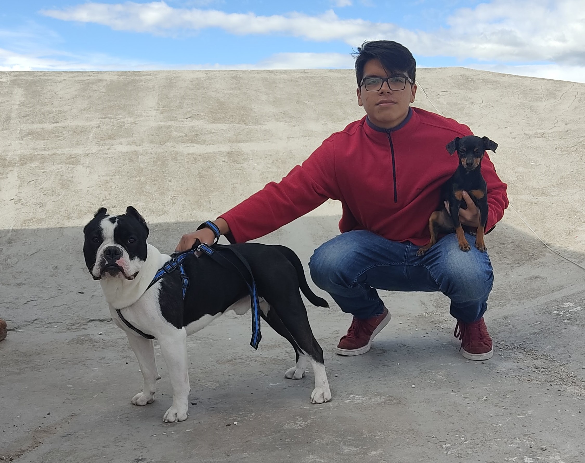

¡Hola!
Soy David Andres Lopez Galán, tengo 21 años, apasionado por la programación y la ingeniería en software. Nací el 30 de agosto del 2002 en Riobamba, donde resido actualmente.
Soy una persona dedicada, creativa y comprometida con mi trabajo. Mi objetivo principal es crecer profesionalmente dentro del campo de la programación para poder desempeñar un papel fundamental en la sociedad.
